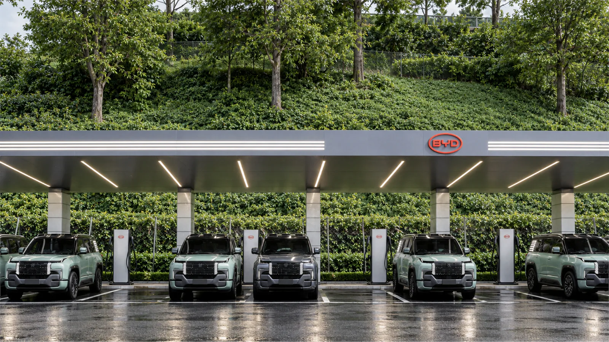
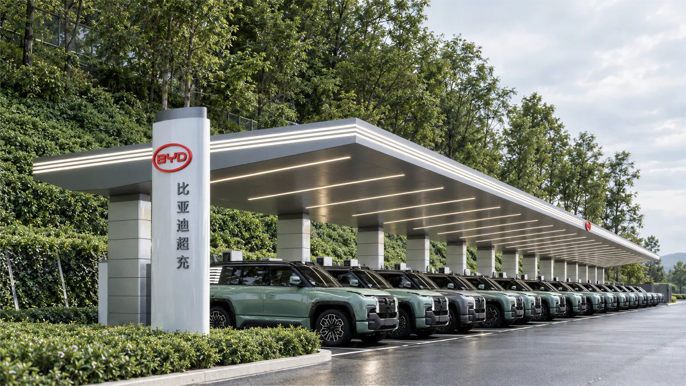

Skip to main content
v
·
Vaiorett
3D & VISUALIZATION
Work
About
Contact
中文
English
Appearance
System
Light
Dark
← Back to selected work
Architecture
project-09
project-09
Project type
Architecture
My contribution
Tools
Project context
What I did
Work & process
4 images · Click to enlarge

01 / project-09
02 / project-09

03 / project-09
04 / project-09
Contribution & credits
Next project
Rail Transit Depot ↗
←
→
Close ×
↑